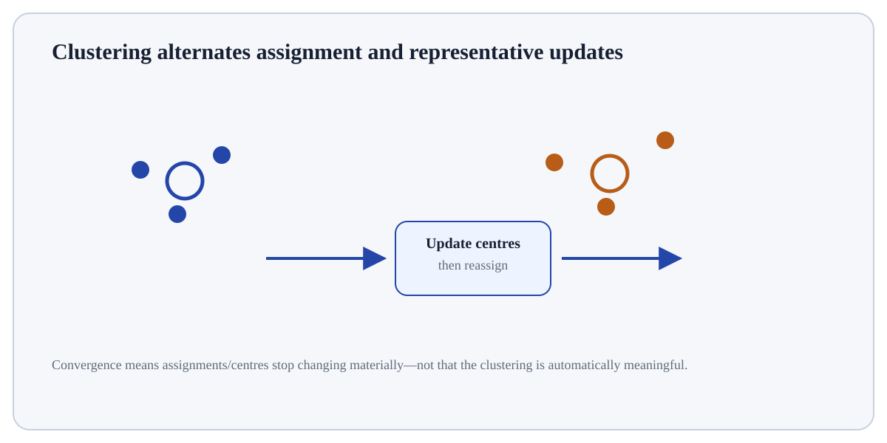

How do unlabeled points organise themselves around centroids?
Start here
How do unlabeled points organise themselves around centroids?
K-Means alternates between assigning each point to its nearest centroid and moving each centroid to the mean of its assigned points.
Building interactive view…
Understand
Build the mental model
K-Means alternates between assigning each point to its nearest centroid and moving each centroid to the mean of its assigned points. Scale features, try multiple initialisations, and validate whether clusters are useful—not merely compact.
Click a stage to inspect what happens, what changes, and what should be checked before moving on.
Stage 1
Initial centroids
This is a learning/estimation stage. Separate the data supplied to the algorithm from the parameters or structure it learns, and keep validation information outside the fit. Technical context for K-Means Clustering: The algorithm optimises within-cluster sum of squares but can converge to local minima. k-means++ improves initialisation. Euclidean spherical-cluster assumptions matter.
Practitioner checkpoint: Scale features, try multiple initialisations, and validate whether clusters are useful—not merely compact.
What happens if…?
Break the assumption deliberately
Change k and initial centroids to see different local solutions on the same data.
Move the control and explain what you expect before reading the visual.
Technical lens
Formalise what the visual is doing
The algorithm optimises within-cluster sum of squares but can converge to local minima. k-means++ improves initialisation. Euclidean spherical-cluster assumptions matter.
Technical questionUse a tiny case to make the mechanism observable. The algorithm optimises within-cluster sum of squares but can converge to local minima. k-means++ improves initialisation. Euclidean spherical-cluster assumptions matter. Verify one intermediate quantity, state change or mapping independently; then predict the consequence of this change: Change k and initial centroids to see different local solutions on the same data.
Practitioner lens
Use it responsibly
Scale features, try multiple initialisations, and validate whether clusters are useful—not merely compact.
Transfer testInterpreting cluster labels as ordinal values.
Worked exploration
Use the visual as an experiment, not decoration
Choose two initial centroids for four points. Alternate assignment to the nearest centroid and centroid recomputation. Continue until assignments stop changing, then restart with different initial centroids to test stability.
Technical lens
The algorithm optimises within-cluster sum of squares but can converge to local minima. k-means++ improves initialisation. Euclidean spherical-cluster assumptions matter.
Practitioner check
Scale features, try multiple initialisations, and validate whether clusters are useful—not merely compact.
Prediction before interaction
Change k and initial centroids to see different local solutions on the same data.
Exploration walkthrough
Turn the interaction into an evidence trail
Choose two initial centroids for four points. Alternate assignment to the nearest centroid and centroid recomputation. Continue until assignments stop changing, then restart with different initial centroids to test stability. Before moving the control, state your prediction. After the visual changes, name the specific state, statistic, boundary or mapping that changed and explain why that change is consistent—or inconsistent—with your prediction.
Record one observable quantity before the interaction and the same quantity afterwards.
Change one factor at a time so the causal effect of the control is inspectable.
Use an edge or failure case to discover where the concept stops behaving as the simple story suggests.

Static orientation diagram for K-Means Clustering; use the interactive visual above to test how the relationships change.
Reference depth
Open the complete material
The flagship experience is the map. These pages contain the roads.